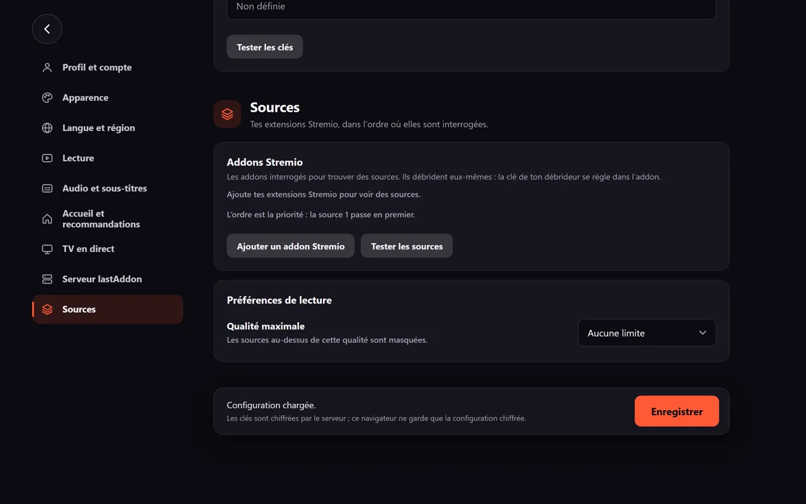
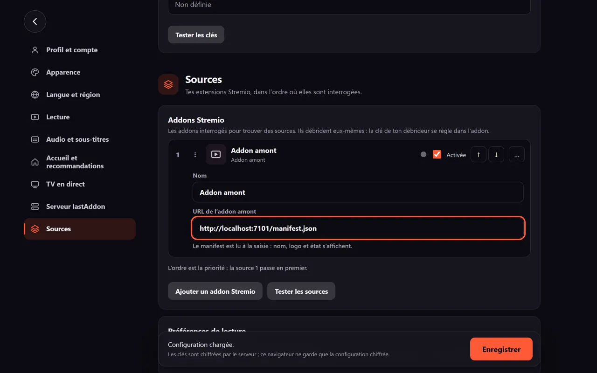
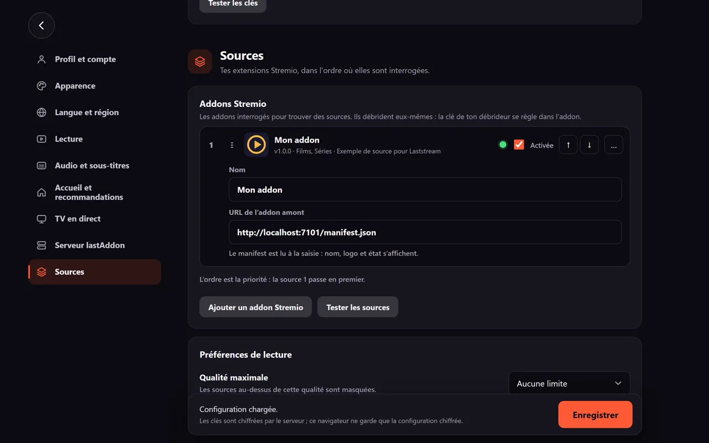
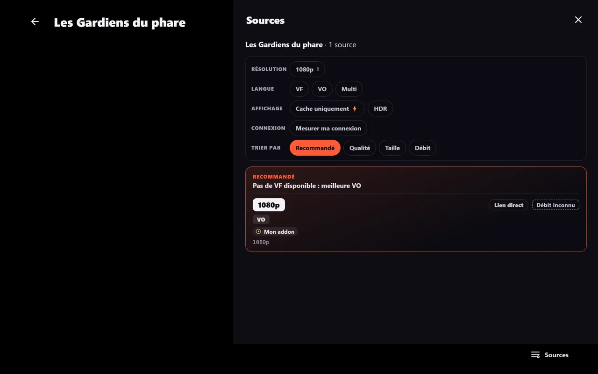

Étapes
-
Ouvre Réglages, catégorie Sources.

-
Dans la carte « Addons Stremio », touche « Ajouter un addon Stremio ».
-
Colle l'adresse dans « URL de l'addon amont », par exemple
https://addon.exemple/manifest.json. Les liensstremio://sont acceptés, et/manifest.jsonest ajouté s'il manque.
Sur les captures, l'adresse commence par
http://localhost: c'est l'extension d'exemple ci-dessous, lancée en local pour le guide. Toi, tu colles l'adresse fournie par l'extension que tu veux installer. -
Le manifest est lu tout de suite : le nom, le logo et l'état de l'addon s'affichent.

-
Touche « Enregistrer » en bas des Réglages.
-
Ouvre la fiche d'un film et touche « Lecture » : l'addon apparaît dans le panneau « Sources » du lecteur (bouton en bas à droite).

Exemple : une extension basique
Une extension est un petit service web qui expose deux adresses : /manifest.json et /stream/{type}/{id}.json.
Le manifest :
{
"id": "exemple.mon-addon",
"version": "1.0.0",
"name": "Mon addon",
"description": "Exemple de source pour Laststream",
"resources": ["stream"],
"types": ["movie", "series"],
"idPrefixes": ["tt"],
"catalogs": []
}Réponse de /stream/movie/tt0000001.json :
{
"streams": [
{
"name": "Mon addon",
"title": "1080p",
"url": "https://exemple.com/video.mp4"
}
]
}C'est exactement l'extension utilisée pour les captures de ce guide.